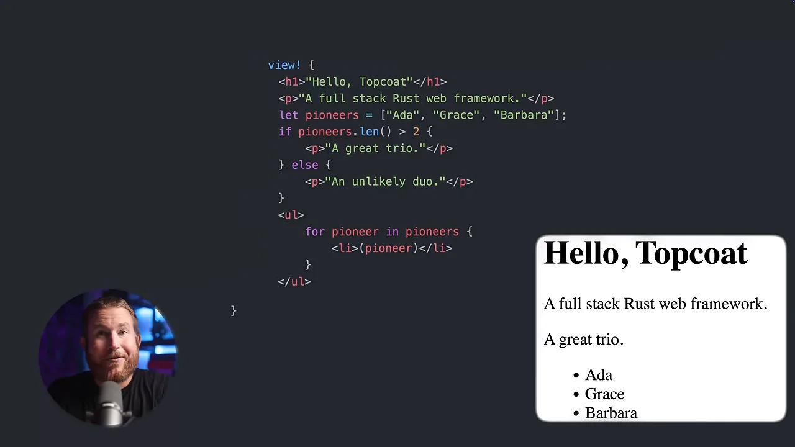
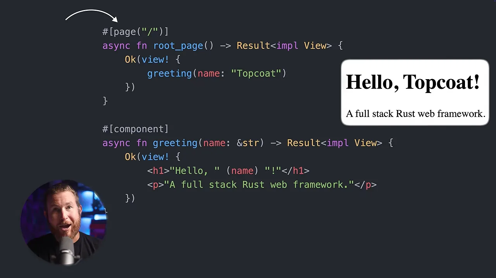
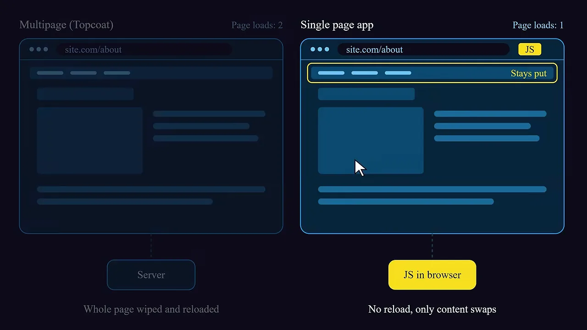
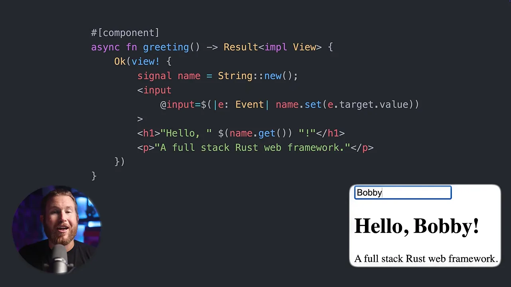
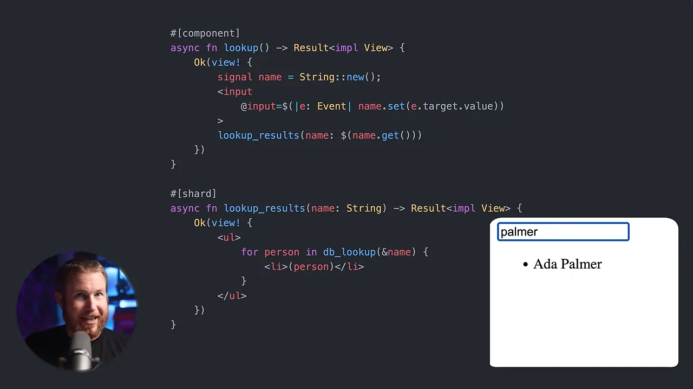
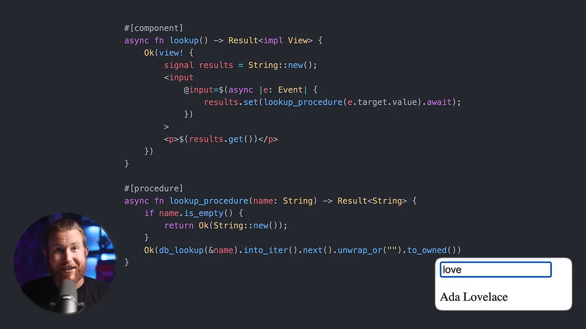

왜 Topcoat이 눈에 띄나요
발표자는 Rust 풀스택 웹 프레임워크가 이미 실전에 쓸 만하다는 말로 시작해요. Next.js로 만들 수 있는 건 Leptos로도 만들 수 있고, Rails 같은 게 필요하면 Loco.rs가 있다는 거예요. 그런데 지금까지 나온 Rust 프레임워크는 대부분 다른 생태계의 인기 프레임워크를 본떠 만들었어요.
아래 그림이 그 계보예요. 왼쪽 Rust 쪽의 Leptos·Dioxus·Yew는 JavaScript 쪽 SolidJS나 React로, Loco.rs는 Ruby의 Rails로 선이 이어져요. 맨 아래 점선 상자의 Topcoat만 물음표로 끝나요. 한 가지 원형을 짚기 어려운 새 프레임워크라는 뜻이에요.

눈여겨볼 점이 둘 있어요. 하나는 Topcoat이 GitHub의 Tokio 조직 안에 있다는 거예요. Axum, Tracing, Tokio 자체와 같은 곳이죠. 다른 하나는 브라우저에서 도는 코드를 WebAssembly가 아니라 JavaScript로 컴파일한다는 점이에요. 다른 Rust 풀스택 프레임워크는 거의 다 WebAssembly를 써요.
README의 첫 예제를 보면 Leptos와 닮았어요. 파란색으로 칠한 부분처럼 view! 안에 HTML을 쓰고, 아래쪽 #[component] 함수 hello를 hello(name: "World")처럼 불러요. 맨 위 문구는 'Early-stage and experimental. Expect breaking changes.'예요. 아직 초기 단계이고 호환성이 깨질 수 있다는 경고죠.

#[shard], #[procedure] 같은 매크로가 따로 있어요. 영상 01:04에서 보기view 매크로와 페이지 라우팅
view! 매크로는 HTML의 상위 집합 같은 문법이에요. 거의 HTML 그대로 쓰되, 텍스트만 큰따옴표로 감싸요. 여기에 Rust 문장을 바로 섞을 수 있어요. 아래 코드는 let pioneers = ["Ada", "Grace", "Barbara"];로 배열을 만들고, if pioneers.len() > 2로 문장을 고른 뒤, for로 목록을 그려요. 오른쪽 결과 화면에 'A great trio.'와 이름 세 개가 찍혀요.

#[component]가 붙은 함수는 다른 view! 안에서 함수처럼 불러요. 아래 코드에서 root_page가 greeting(name: "Topcoat")을 부르고, greeting은 일반 Rust 함수처럼 name: &str 인자를 받아요. 위쪽 화살표가 가리키는 #[page("/")]는 URL 경로 /를 이 함수에 묶어요.

왜 라우터 컴포넌트가 없나요
Leptos는 앱 진입점이 하나이고, 라우터 컴포넌트 안에 모든 경로를 몰아넣어요. Topcoat은 전통적인 멀티 페이지 앱이라 그럴 필요가 없어요. 발표자는 2010년대 JavaScript 프레임워크 붐 이전에 다들 만들던 방식이라고 설명해요.
아래 그림의 왼쪽이 Topcoat 방식이에요. 경로를 옮기면 서버가 페이지 전체를 새로 보내고, 오른쪽 위 'Page loads: 2'처럼 로딩이 두 번 일어나요. 오른쪽 싱글 페이지 앱은 'JS in browser'가 내용만 바꿔 끼우고, 노란 'Stays put' 막대는 그대로 남아요. 로딩은 한 번이에요.

시그널과 런타임 표현식
Leptos에서는 컴포넌트가 상황에 따라 서버에서도, 브라우저에서도 렌더링돼요. Topcoat은 반대로 시작해요. 지금까지 쓴 코드는 언제나 서버에서만 렌더링돼요. 브라우저에서 돌 로직은 특별한 문법으로 표시해야 해요.
먼저 view! 안에서 시그널을 만들어요. 시그널을 읽는 브라우저 코드는 값이 바뀌면 자동으로 다시 그려져요. 반응형 프런트엔드 프레임워크를 써 봤다면 익숙한 개념이에요.
그다음 브라우저에서도 돌릴 식을 $( … )로 감싸요. 이를 런타임 표현식이라고 해요. 처음 페이지를 열 때는 서버가 계산하고, 그 뒤엔 참조한 시그널이 바뀔 때마다 브라우저가 다시 계산해요. 아래 그림이 이 흐름이에요.
$( … )로 감싼 부분만 브라우저로 넘어가요. 나머지는 서버에만 남아요.데모는 입력칸 하나를 붙여요. @input=$(|e: Event| name.set(e.target.value))가 입력할 때마다 시그널 name을 바꾸고, 제목의 $(name.get())이 그 값을 읽어요. 오른쪽 화면에 'Bobby'를 치자 제목이 'Hello, Bobby!'로 바로 바뀌어요.

서버 데이터 붙이기: shard와 procedure
이제 입력한 이름으로 데이터베이스를 찾아 결과를 보여 주고 싶어요. 데모는 greeting을 lookup 컴포넌트로 바꿔요. Topcoat에는 이걸 푸는 길이 두 가지 있어요. 아래 그림은 두 길을 나란히 놓은 거예요. 영상이 두 장면에 걸쳐 설명한 것을 한 장에 모았어요.
첫 번째 길, shard
lookup_results 컴포넌트에 시그널 값을 인자로 넘겨요. 하지만 #[component]는 페이지를 처음 열 때 한 번만 렌더링되니 입력이 바뀌어도 그대로예요. 이걸 #[shard]로 바꾸면 달라져요. 인자가 바뀔 때마다 브라우저가 서버에 새 값을 보내 다시 그려 달라고 요청해요. 서버는 JSON(JavaScript Object Notation)이 아니라 HTML로 답해요.
아래 코드에서 #[shard]가 붙은 lookup_results는 for person in db_lookup(&name)으로 서버에서 바로 조회해요. 오른쪽 입력칸에 'palmer'를 넣자 목록에 'Ada Palmer' 한 줄이 남아요. 컴포넌트가 늘 서버에서 그려지니 데이터베이스 조회 같은 서버 일을 그대로 할 수 있어요.

단점도 짚어요. 매번 HTML 전체를 보내야 해요. 대부분은 아주 작은 부담이지만 최적은 아니라고 느낄 수 있어요. 새로 받은 데이터보다 그걸 감싼 HTML이 훨씬 큰 경우도 쉽게 떠올릴 수 있죠.
두 번째 길, procedure
두 번째 길은 Leptos에 가까워요. 서버가 다시 그리는 특별한 컴포넌트 대신, #[procedure]를 붙인 함수가 데이터베이스를 조회하고 HTML이 아닌 원시 값을 돌려줘요. 그러면 브라우저의 런타임 표현식이 부를 수 있는 서버 API가 하나 생겨요. Leptos 서버 함수나 React 서버 함수와 같은 역할이에요.
아래 코드의 아래쪽 lookup_procedure는 Result<String>을 돌려줘요. 위쪽 lookup 컴포넌트는 입력이 바뀔 때마다 lookup_procedure(e.target.value).await를 부르고, 받은 값을 시그널 results에 넣어요. 그 값은 $(results.get())로 브라우저에서 다시 그려져요. 입력칸에 'love'를 치자 'Ada Lovelace' 하나만 보여요.

왜 결과를 하나만 돌려주나요
돌려준 값은 Rust로 쓰였지만 JavaScript로 컴파일된 런타임 표현식이 읽어야 해요. 영상 시점에는 여기서 쓸 수 있는 Rust 타입이 몇 개뿐이었고 Vec은 빠져 있었어요. 그래서 데모는 첫 결과 하나만 돌려주는 걸로 물러서요. 발표자는 당분간 새 데이터를 화면에 띄울 땐 shard가 더 나은 선택으로 보인다고 해요. 다만 메인테이너들이 지원 타입을 넓히려 한다는 점은 좋게 봐요.
발표자는 여기까지가 Topcoat의 핵심이라고 말해요. 좋아할지 싫어할지 정하기엔 충분하다는 거죠. 짧게 하려고 넘어간 기능도 많아요. 레이아웃 매크로, shadcn처럼 미리 만든 UI(User Interface) 컴포넌트 모음인 Topcoat UI, 앱 컨텍스트, Tailwind CSS(Cascading Style Sheets) 지원, 요청 컨텍스트, 쿠키 처리 같은 것들이에요.
발표자의 평가: Leptos를 버릴까요?
발표자는 Topcoat을 Rust 풀스택 생태계에 꼭 필요했던 프레임워크로 봐요. 가장 큰 장점은 단순함이에요. Rust를 잘 모르는 사람도 금방 시작할 수 있겠다고 해요. 근거로 세 가지를 들어요.
- 보일러플레이트가 사실상 한 줄뿐이에요.
view!문법이 단순하지만 강력해요.- 서버 렌더링 모델이 htmx와 아주 비슷해요.
Rust 입문자든 웹 개발 입문자든 다가가기 쉽다는 점에서 Leptos나 Dioxus보다 빛난다고 해요.
아쉬운 점: Rust의 부분집합
브라우저 쪽 로직은 JavaScript로 컴파일되는 Rust의 '부분집합'으로만 써요. 발표자는 이걸 대담하고 훌륭한 선택이라고 하면서도 미지근하게 봐요. Leptos는 브라우저 코드도 WebAssembly로 컴파일하니 Rust 문법 전체를 쓸 수 있어요. 두 프레임워크를 영상이 말한 기준으로 나란히 놓으면 이래요.
| 기준 | Topcoat | Leptos |
|---|---|---|
| 브라우저 코드 컴파일 대상 | JavaScript | WebAssembly |
| 브라우저에서 쓰는 Rust | 부분집합 | 전체 문법 |
| 렌더링의 중심 | 서버 (htmx와 비슷) | 서버와 브라우저 어디서나 |
| 페이지 구조 | 멀티 페이지 앱 | 진입점 하나 + 라우터 컴포넌트 |
| 서버 데이터 받기 | shard(HTML) 또는 procedure(값) | 서버 함수 |
| 첫 로딩 | 번들이 작아 유리 | WebAssembly 번들이 커서 느려질 수 있음 |
| 잘 맞는 사람 | Rust 풀스택 입문자 | 브라우저 로직이 많은 앱 |
그렇다고 WebAssembly가 브라우저 코드를 더 빠르게 하느냐 하면, 발표자의 답은 '대개는 아니다'예요. Google Earth나 Figma처럼 캔버스에 도형과 픽셀을 쏟아붓는 앱이라면 도움이 되고, 그럴 땐 Leptos가 당연한 선택이에요. 게다가 WebAssembly 번들은 크기로 악명이 높아서 첫 로딩이 느려질 수 있어요. JavaScript를 쓰면 이걸 줄일 수 있죠. 그래도 성능 이득이 없을 때조차 Rust 전체 문법을 마음껏 쓸 수 있다는 건 의미가 있다고 봐요.
Is Topcoat going to replace Leptos for me? Generally speaking, no.
Topcoat이 제게 Leptos를 대신할까요? 대체로는 아니에요.
— 영상 08:54
정리하면 Topcoat은 서버 렌더링이 중심이고, 브라우저 로직은 필요할 때 쓸 수 있지만 '일등 시민'은 아니에요. 적어도 아직은요. 발표자는 대부분의 경우 브라우저 로직에 Rust 전체가 필요해서 Leptos를 계속 쓰겠다고 해요. 다만 Rust로 풀스택 웹을 처음 시작한다면, 특히 프레임워크가 조금 더 무르익으면 Topcoat이 좋은 출발점이라고 권해요. 이걸 보고 Topcoat으로 옮기는 Leptos 사용자도 있을 거라고 덧붙여요.